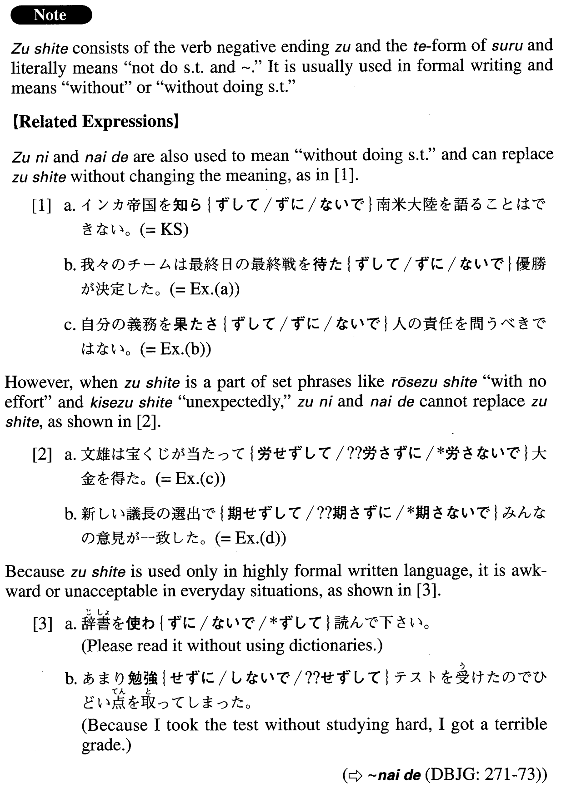

ずして (A. 753)
- (ks).
- インカ帝国を知らずして南米大陸を語ることはできない。
- You cannot talk about the South American continent without some knowledge of the Inca Empire.
- (a).
- 我々のチームは最終日の最終戦を待たずして優勝が決定した。
- Our team won the championship before (literally: without waiting for) the final game on the final day.
- (b).
- 自分の義務を果たさずして人の責任を問うべきではない。
- You should not call others to account when you have not performed your own duties.
- (c).
- 文雄は宝くじが当たって労せずして大金を得た。
- Fumio won the lottery, receiving a large sum of money with no effort.
- (d).
- 新しい議長の選出で期せずしてみんなの意見が一致した。
- In the election for a new chairman, unexpectedly (literally: without expecting), everybody agreed (on who it should be).
- (e).
- 今勉強せずしていつするのか？
- If we/you don't study now, when will you study?
- (f).
- 荒木氏は自分の設計した建物の完成を見ずして亡くなってしまった。
- Mr. Araki died before (literally: without) seeing the completion of the building he'd designed.
- (g).
- ウイルスに感染した電子メールを社外の個人、団体に送信してしまい、意図せずして加害者になってしまった。
- I became an offender without meaning to after sending a virus-infected e-mail to individuals and groups outside my company.
- (h).
- 敵を知らずしては戦えない。
- You cannot fight without knowing your enemy.
